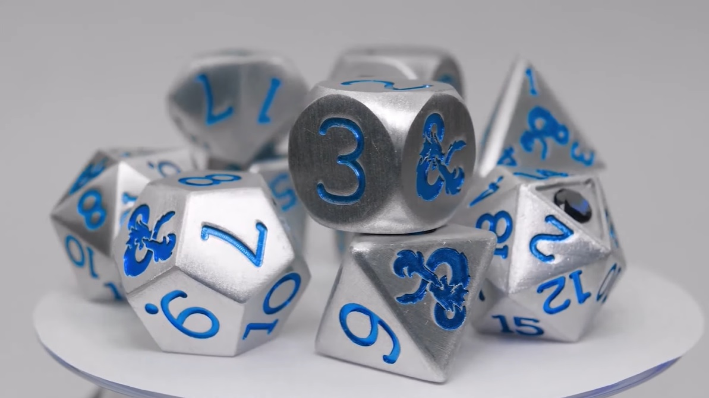

Ability Scores/Modifiers: What does a tomato have to do with this?
Get ready for a long, but very important section. In DND there are a total of 6 ability scores and modifiers. These modifiers are physical and mental statistics that determine your character's ability to operate in the world. You will be using these ability to determine the success of your actions. To help explain what each of these modifiers are, I like to turn to a tomato for help (turn TO a tomato, not turn INTO a tomato). Essentially, your ability scores are used to calculate your ability modifier. When you're playing, the number you are going to reference the most is your ability modifier. There are 3 different ways to generate your ability scores, but if you don't care too much about that, you can just pick one and use it (I recommend using the first method).
Character Sheet Check!
In this page I will show you three different ways to generate your ability scores. I will also teach you about saving throws, skill checks, and proficiency. You should be familiar with the skills box and the ability scores on the left side of your character sheet. By the time you are finished with this page, you should know how to fill out your ability scores/modifiers as well as have a good grasp of what skills are, and how too apply your proficiency to these skills and saving throws.
What do all of these scores even mean? The tomato metaphor
It's easy to understand the basic idea of what each ability score represents, but to help solidify that idea I go to the tomato metaphor. Keep in mind a 10 represents an average person's ability score.
Strength is your ability to crush a tomato. Pretty straightforward, Strength is your athleticism and overall power when doing physical jobs such as pushing heavy doors or breaking a brick with your hands. Most melee weapons use Strength as their modifier when attacking and dealing damage (more on that here). A high strength character can perform great feats of athleticism.
Dexterity is your ability to throw a tomato. A trickier score to grasp, Dexterity is your ability to nimbly navigate your body through precision tasks such as gymnastics or lockpicking. Dexterity is also used when calculating attacks and damage for ranged weapons, along with a few special melee weapons (once again refer to the equipment page). A highly dextrous character has great control of their body and could be an expert artisan.
Constitution is your ability to eat a tomato and not get sick. Constitution is your overall heartiness and endurance. Constitution plays a role when you are enduring harsh conditions, such as extreme temperatures, or eating raw food (Salmonella is a real threat to adventurers). This score also determines your HP, so it's never bad to have too much of this. A high Constitution character is not fazed by the heat of the desert, and will be hard to poison by regular means.
Intelligence is knowing a tomato is a fruit. Intelligence is your basic "book smarts". Intelligence is used mostly to reference material that your character may or may not have memorized. It is also the spellcasting modifier for Wizards. A character with high intellect will be able to recall the most distant of memories, as well as process information at a much faster pace than others.
Wisdom is knowing not to put a tomato in a fruit salad. Wisdom is your overall instincts and "logic". Not to be confused with Intelligce, Wisdom is used when applying knowledge, such as traversing a forest, or applying medicine to the injured. Wisdom is also the spellcasting modifier for Clerics, Druids, and Paladins. Wise characters have sharp instincts, with the ability to quickly grasp a situation and apply their life skills to their adventuring.
Charisma is being able to sell a tomato based fruit salad. Charisma is your ability to manipulate people, whether from a silvertongued lie, or a straight threat that shakes them to the core. A highly charismatic character does not have to be necessary likable, though oftentimes being liked can help. What makes a highly charismatic character is their ability to convince others to do what they want. It is also the spellcasting modifier for Bards, Sorcerers, and Warlocks.
Ability Score Generation Method 1: Roll Your Heart Out
This is my preferred method of generating ability scores. For this method you will need 4 d6's, or you can roll 1d6 4 times (the d6 is your 6 sided die, the normal looking one). You will roll 4 d6's, and remove the lowest number (in case of a tie just remove one of them). Add up the 3 remaining numbers and that's how you generate 1 ability score. You will do this 6 times, for each ability score. For example, I roll my dice, and get a 4, 3, 1, 4. I take out the 1 because it is my lowest number, and add up the rest to 10. That is my first ability score.
DM Variants: There are several variants you can apply to this method to help reduce the pain of rolling a terrible number. You can give your players the ability to reroll low numbers (I give my players the ability to reroll 1's once per score). Another way is to allow your player to roll an extra 7th score, and pick 6 out of those 7.
Ability Score Generation Method 2: Standard Array
If you are looking for a more straightforward and less variable style, the standard array is a good way to make sure that your party members are all balanced at the beginning of the session. For standard array each player allocates 6 set scores. Those scores are 15, 14, 13, 12, 10, and 8. The only choices you have in a standard array style is which score goes where. While many people prefer the other methods over this one, the standard array ensures that encounters will be balanced. For the DM's, the CR will be way more accurate in a party with a standard array of ability scores over a party who generated their scores through rolling or point buy.
Ability Score Generation Method 3: Point Buy
This method gives players the most agency to create a character that they are envisioning, at the cost of a little bit of balance. Essentially in a point buy system, a player gets 27 points to allocate into their character. Each score starts at an 8, and you spend those 27 points to invest in any score that you want. Raising the score past 13 will cost 2 points and you cannot exceed 15 without your racial bonuses. Of course, your DM can bend the rules and allow you to go past 15 with some balancing, but I found this way to be the most balanced, especially when starting at level 1. To make it simple, this website is a good tool for generating your scores.

Ability Checks Proficiency Bonus: Everyone just loves sleight of hand
During general skill checks, you will be rolling a d20 (get familiar with this dice because you will be using this one a lot) and adding the respective modifier (Nature checks add your Wisdom modifier, Acrobatics checks add your Dexterity modifier, etc). These skills and their respective ability modifiers can be found in the skills box of your character sheet. Even as a beginner adventurer, you are bound to have learned some valuable life skills. All that training pays off in the form of proficiency. Your proficiency bonus can be found in your class table, and rises once you hit a certain level. IF and only IF you are proficient in the skill will you add your proficiency bonus in addition to your ability modifier when rolling. Let's say the DM has me roll an acrobatics check, a skill that I am proficient in. Like before, I will roll the d20 and adding my Dexterity modifier, and in addition to that I add my proficiency bonus.
Saving Throws: Like skill checks, but your life is in danger
Saving throws are very simple if you understand skill checks. If you roll a skill check to decide if you receive a reward, you roll a saving throw to determine if you receive a punishment. Whether that's a fireball roaring in your direction, or that raw chicken isn't settling well in your stomach, you will have to pass a saving throw if you want to get out of that situation unscathed. Like skill checks, you will roll a d20 and add the respective ability modifier. (Dexterity saving throws require Dexterity... Simple right?) Then, you will check if you are proficient in that saving throw and add your proficiency bonus if appropriate.
Inspiration and Advantage: Incentive to roleplay
Inspiration is something the DM may offer to players as an incentive, mostly for good roleplaying. What inspiration does changes from DM to DM, but the most common case is that inspiration offers advantage to any roll a player may make. Advantage gives players the ability to roll twice and take the higher of the two, usually with anything that uses a d20 (skill checks, saving throws, attacks, etc). Conversely, disadvantage forces you to roll twice and take the lesser of the two.